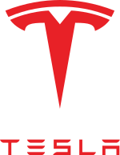

Tesla:
 Elon Musk est plus connu du grand public pour le rôle qu'il joue au sein de Tesla. Après être entré dans le capital de la société en 2004, il en prend le contrôle et la dirige depuis octobre 200820, date à laquelle il est devenu président. Tesla construit d'abord une voiture de sport électrique, la Tesla Roadster, puis produit une berline électrique plus économique, la Tesla Model S, suivie de la Tesla Model X, un SUV haut de gamme. Elon Musk veut produire des véhicules électriques plus accessibles : c’est chose faite en 2018 avec le lancement de la Tesla Model 3, une berline beaucoup plus accessible (commercialisée moins de 50 000 €, contre plus de 100 000 € au lancement de la Tesla Model S) . Les bénéfices engendrés par la Tesla Roadster ont servi à financer les coûts de recherche et de développement des modèles suivants à plus bas coût. Il est également l'investisseur et le président du conseil d'administration de SolarCity (produits photovoltaïques et services), dont son cousin Lyndon Rive est le président. La motivation fondamentale pour créer les deux entreprises est d'aider à combattre le réchauffement climatique. En 2008, SpaceX et Tesla font face à de nombreuses difficultés financières mais sont finalement sauvées la même année. SpaceX s'en sort en signant avec la NASA un contrat de ravitaillement pour la Station spatiale internationale (ISS) d'une valeur de 1,6 milliard de dollars14. Les fusées Falcon 9 et les vaisseaux Dragon ravitaillent la station depuis 2012. Tesla est également sauvée en 2008 lorsque les investisseurs décident d'augmenter leurs participations financières dans la société.